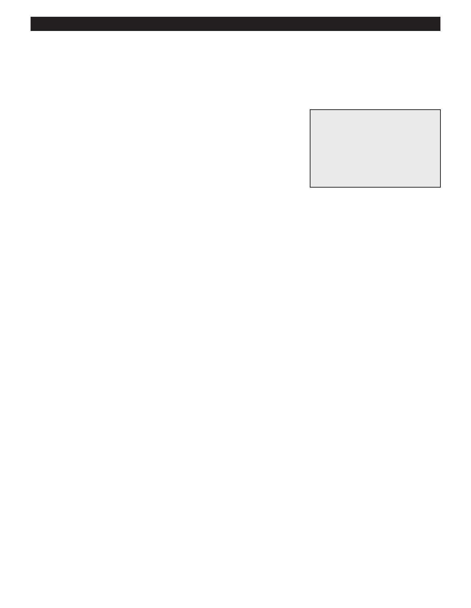

PA RT I C I PA N T R E S O U R C E G U I D E
Test and Replace a Thermocouple
If that pesky standing pilot will not stay lit, investigate the thermocouple. If it is faulty,
replacing it will most likely solve your pilot problems.
Safety
Tools and Materials Needed
Wear a face shield or goggles to protect your eyes.
Screwdriver
Make sure you shut off the gas supply line and electrical power (if you replace the
Multimeter
thermocouple).
Wrench
Use lockout/tagout procedures (if you replace the thermocouple).
Lockout/tagout device
Replacement thermocouple
How-to Steps
1. Remove the furnace panel.
2. Hold the control knob to PILOT and light the pilot.
3. Unscrew the thermocouple fitting with an open-ended wrench.
4. Set a multimeter to the DVC (lowest voltage) scale.
5. Clip one multimeter probe to the end of the thermocouple tube nearest the pilot and the other probe to the fitting on the
other end of the tube.
6. If the multimeter shows a reading above 15, the thermocouple is functioning. Place the thermocouple tube back in the
furnace. (A power pile thermocouple, by the way, should register a reading close to 700 millivolts on the meter.)
7. If there is no reading, you’ll need to clean or replace the thermocouple, following steps 8 through 14.
8. Release the control knob and shut off the main gas valve on the gas-supply pipe that leads into the burner. Shut off
power to the burner at the electrical service panel.
9. Lock and tag out the gas supply line.
10. Lock and tag out the electrical service panel.
11. Remove the thermocouple from its mounting bracket.
12. Wipe the combination control clean and install a new thermocouple, tightening it by hand, then give it a one-quarter turn
with a wrench.
13. Insert the thermocouple into the pilot bracket, being careful to not crimp the tubing.
14. Turn the power and gas back on to the furnace, then relight the pilot.
Notes:
41